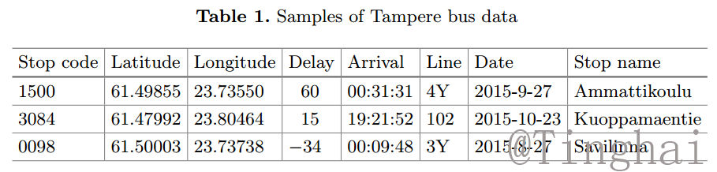
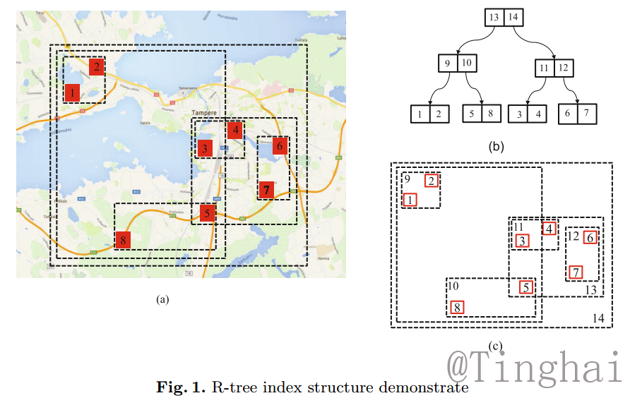
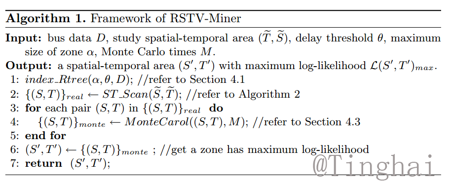
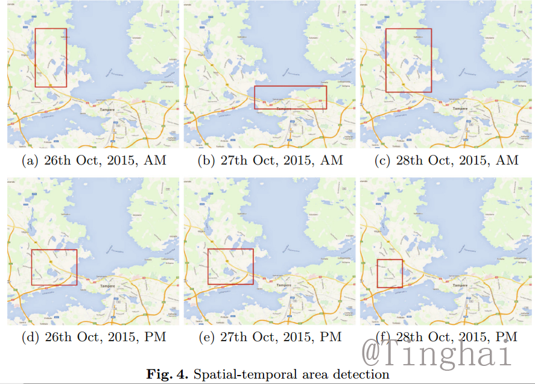

Detection of Statistically Significant Bus Delay Aggregation by Spatial-Temporal Scanning
基于时空扫描的公交延迟显著聚集性探测
Bus delay aggregation
Spatial-temporal analysis
Traffic data mining
R-Tree
Monte Carlo
Introduce
Public bus service plays an indispensable role in modern
urban traffic system. With the bus running data, the detection of the
statistically significant aggregations of bus delay is useful for optimizing
the bus timetable, so that the service quality can be improved. However,
previous studies have not considered how to detect bus delay aggre
gation using statistical hypothesis testing. To fill that gap, this paper
considers the detection of bus delay aggregation from bus running data.
We present RSTV-Miner, a mining method using statistical hypothesis
testing, for detecting statistically significant bus delay aggregation. Our
empirical study on real data demonstrates that RSTV-Miner is effective
and efficient.

The city of Tampere, Finland, released as open data [2] the locations
of its buses at every second. In particular, the bus data includes information on,
for each bus and each bus stop, whether a bus was on schedule and how much
was the delay if it was not on time. Table 1 lists several samples of Tampere
bus data. Each record contains the information of a bus arriving at a bus stop.
For example, by the first record in Table 1, we can see that a bus of Line 4Y
arrives at Stop Ammattikoulu (code: 1500, location: 61.49855”N, 23.73550”E)
at 00:31:31 AM on September 27, 2015 with 60 s behind schedule. As shown in
the last record in Table 1, the value of “Delay” is minus if the bus arrives ahead
of schedule, there are also other details not mentioned.
Method

To detect the aggregation of bus delay, we need to structure an index for
zones. At this moment, using each zone to structure the index and searching
for its neighbors is a time-consuming process. In addition, the computation cost
is very high. This does not allow us to search all sub-areas of S. To address
this issue, we use R-tree to structure index that will help us to group nearby
zones and retrieve data quickly according to their spatial locations. And to be
more statistical significance, when generating an R-tree, we just use zones which
overcast at least one bus stop. As demonstrated in Fig. 1, we give an example
of R-tree structure in which red rectangles represent the zones overcasting bus
stops. We start to build R-tree by using the zones which have partitioned. As
illustrate Fig. 1(c), we use R-tree structure, so that a spatial search requires to
visit only a small number of nodes.

We present our method, RSVT-Miner, for mining bus delay aggregation from bus dataset. In general, the framework of RSTV-Miner includes: Rtree index structure, spatial-temporal scan, and statistical test. Technically, the
key issues of RSTV-Miner are generation and effective scan of index. Algorithm 1
presents the procedure of our method.
Result

We can find that these zones attached to spatial-temporal area
are nearby the center square, a bridge, some traffic hubs and narrow places of
Tampere, as illustrated in Fig. 4 which presents the results from 26th August to
28th August. These results are in accordance with the previous studies [1] and
our general knowledge of Tampere traffic.
Refference
1. Syrjarinne, P., Nummenmaa, J., Thanisch, P., Kerminen, R., Hakulinen, E.:
Analysing traffic fluency from bus data. IET Intell. Transport Syst. 9(6), 566–572
(2015)
2. Syrjarinne, P., Nummenmaa, J.: Improving usability of open public transportation
data. In: 22nd ITS World Congress, pp. 5–9 (2015)
3. Mazloumi, E., Rose, G., Currie, G., Sarvi, M.: An integrated framework to predict
bus travel time and its variability using traffic flow data. J. Intell. Transp. Syst.
15(2), 75–90 (2011)
4. Padmanaban, R., Divakar, K., Vanajakshi, L., Subramanian, S.: Development of
a real-time bus arrival prediction system for indian traffic conditions. IET Intell.
Transport Syst. 4(3), 189–200 (2010)
5. Yu, B., Lam, W.H., Tam, M.L.: Bus arrival time prediction at bus stop with
multiple routes. Transp. Res. Part C: Emerg. Technol. 19(6), 1157–1170 (2011)